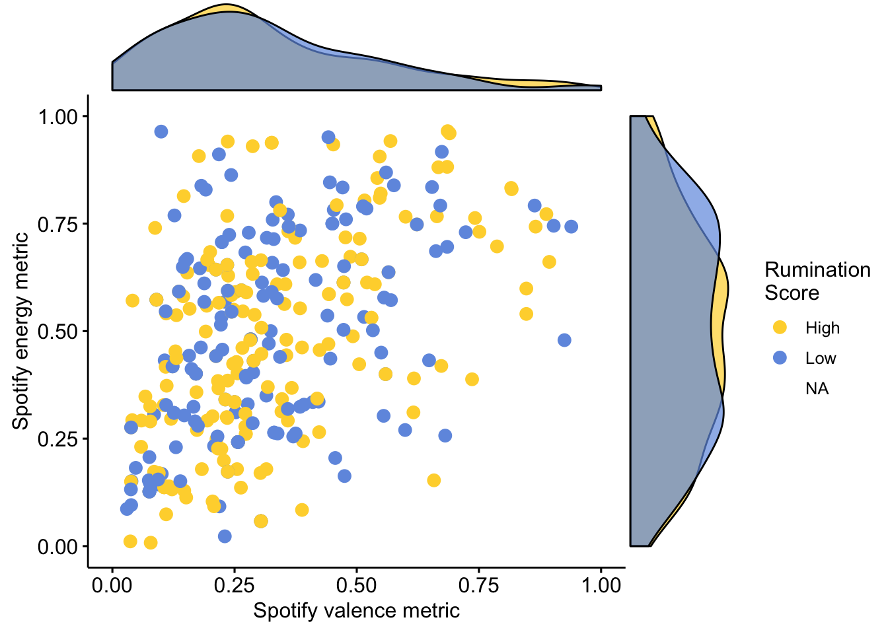
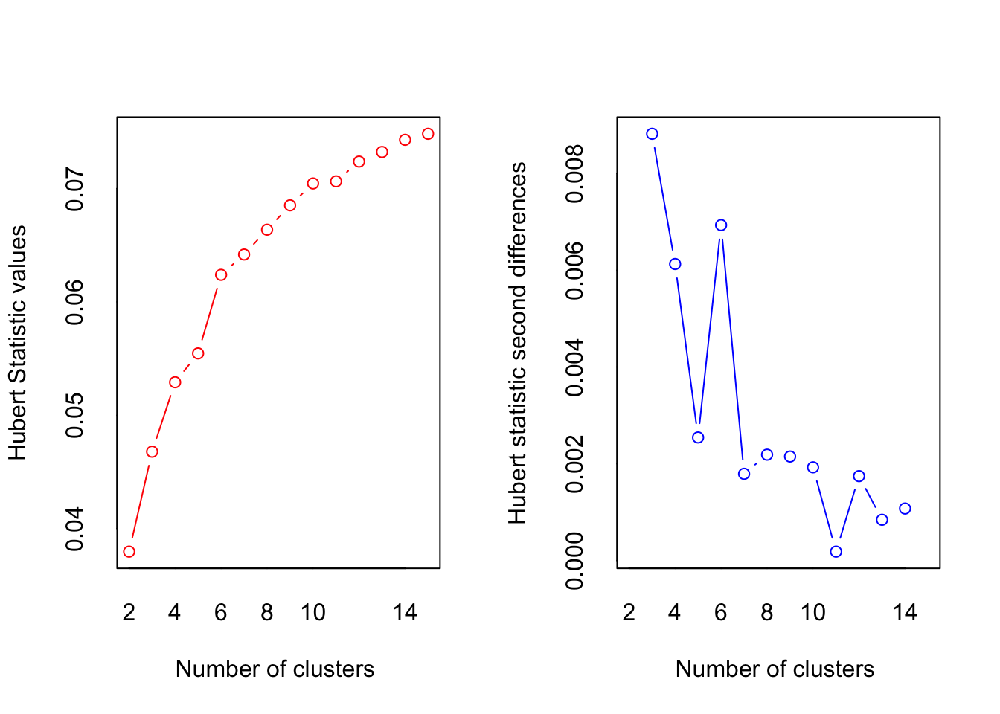
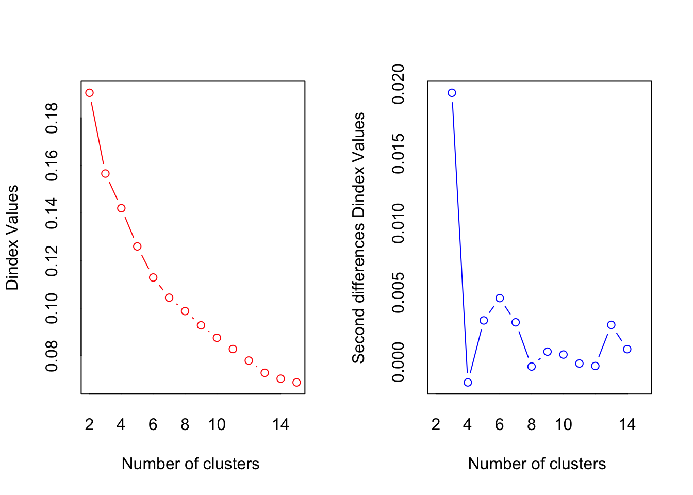
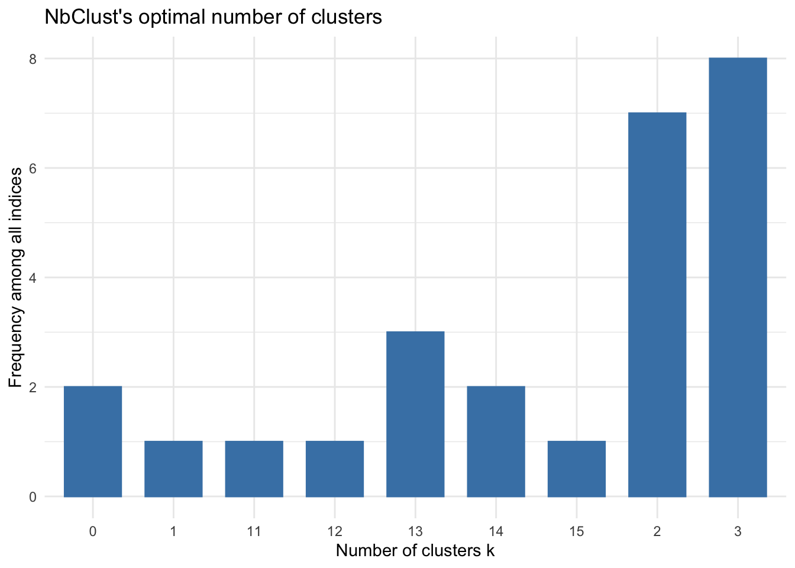
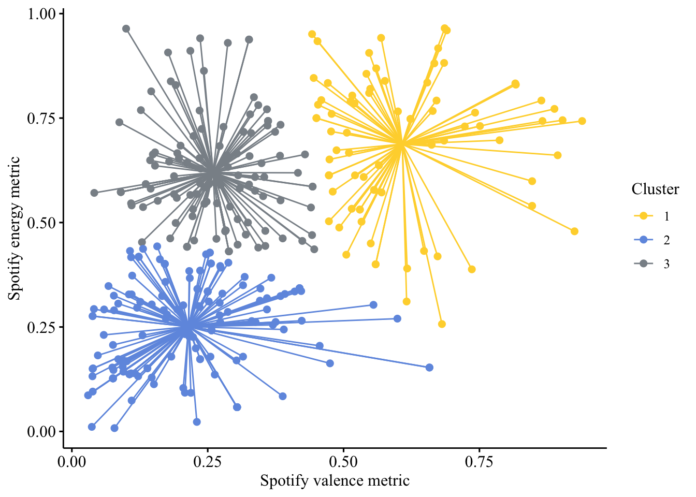
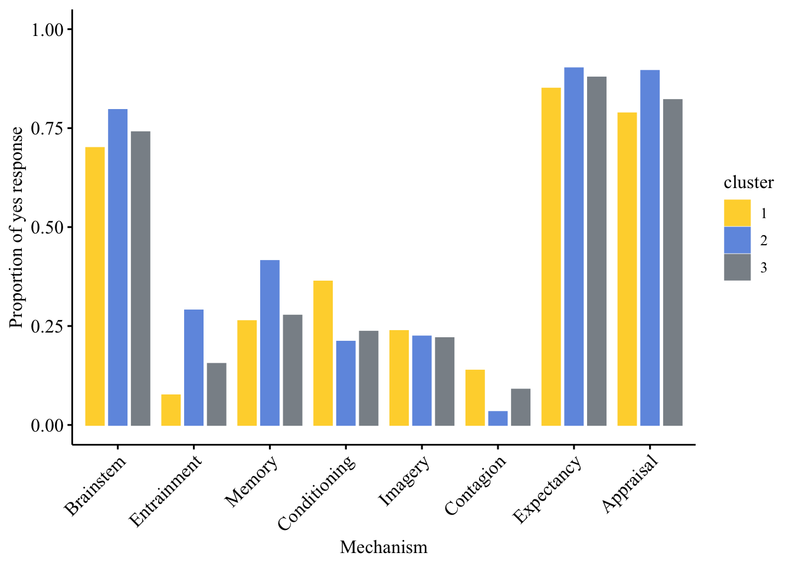
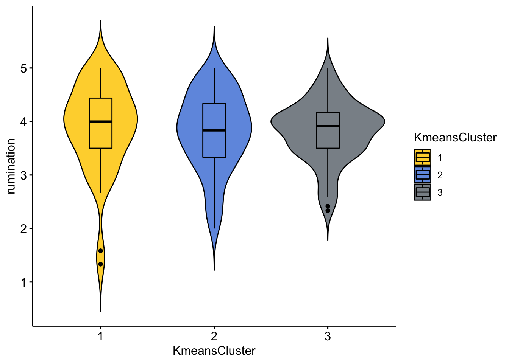
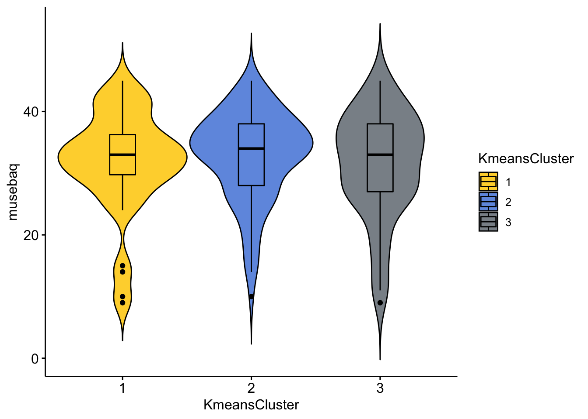
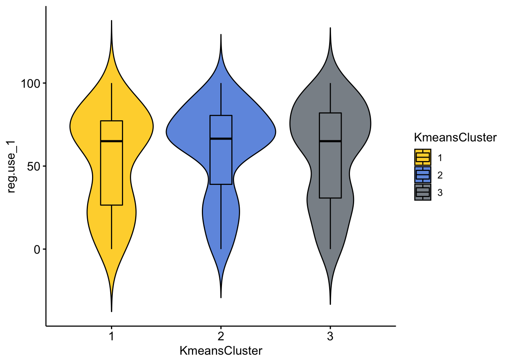
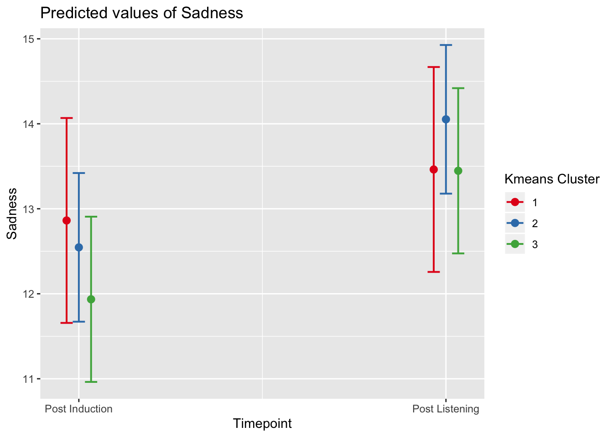

Last updated: 2019-10-04
Checks: 6 1
Knit directory: MusicEmoRegInRumination/
This reproducible R Markdown analysis was created with workflowr (version 1.4.0). The Checks tab describes the reproducibility checks that were applied when the results were created. The Past versions tab lists the development history.
The R Markdown file has unstaged changes. To know which version of the R Markdown file created these results, you’ll want to first commit it to the Git repo. If you’re still working on the analysis, you can ignore this warning. When you’re finished, you can run wflow_publish to commit the R Markdown file and build the HTML.
Great job! The global environment was empty. Objects defined in the global environment can affect the analysis in your R Markdown file in unknown ways. For reproduciblity it’s best to always run the code in an empty environment.
The command set.seed(20190920) was run prior to running the code in the R Markdown file. Setting a seed ensures that any results that rely on randomness, e.g. subsampling or permutations, are reproducible.
Great job! Recording the operating system, R version, and package versions is critical for reproducibility.
Nice! There were no cached chunks for this analysis, so you can be confident that you successfully produced the results during this run.
Great job! Using relative paths to the files within your workflowr project makes it easier to run your code on other machines.
Great! You are using Git for version control. Tracking code development and connecting the code version to the results is critical for reproducibility. The version displayed above was the version of the Git repository at the time these results were generated.
Note that you need to be careful to ensure that all relevant files for the analysis have been committed to Git prior to generating the results (you can use wflow_publish or wflow_git_commit). workflowr only checks the R Markdown file, but you know if there are other scripts or data files that it depends on. Below is the status of the Git repository when the results were generated:
Ignored files:
Ignored: .DS_Store
Ignored: .Rhistory
Ignored: .Rproj.user/
Ignored: analysis/StudyOneModelExplore_cache/
Untracked files:
Untracked: analysis/StudyOneLyricsCluster.rmd
Unstaged changes:
Modified: analysis/StudyOneMusicExplore.Rmd
Note that any generated files, e.g. HTML, png, CSS, etc., are not included in this status report because it is ok for generated content to have uncommitted changes.
These are the previous versions of the R Markdown and HTML files. If you’ve configured a remote Git repository (see ?wflow_git_remote), click on the hyperlinks in the table below to view them.
| File | Version | Author | Date | Message |
|---|---|---|---|---|
| Rmd | a655246 | Joel Larwood | 2019-10-02 | mutate instead rename |
| Rmd | 21d6703 | Joel Larwood | 2019-10-02 | build site first 2 studies |
| html | 21d6703 | Joel Larwood | 2019-10-02 | build site first 2 studies |
| Rmd | 68d41a4 | Joel Larwood | 2019-10-02 | change study structure, hide code |
| html | 68d41a4 | Joel Larwood | 2019-10-02 | change study structure, hide code |
library(tidyverse)
takeone <- function(x, na.rm = TRUE)(x - 1)
s1explore <- read_csv("data/s1Processed.csv") %>%
mutate(rumsplit = if_else(.$rumination < median(rumination, na.rm = TRUE),
"Low", "High")) %>%
mutate_at(.vars = vars(mecscale_1:mecscale_8),
takeone) %>%
dplyr::mutate(brainstem = mecscale_1,
Entrainment = mecscale_2,
Memory = mecscale_3,
Conditioning = mecscale_4,
Imagery = mecscale_5,
Contagion = mecscale_6,
Expectancy = mecscale_7,
Appraisal = mecscale_8) %>%
mutate(LikelyUse = if_else(reg.use_1 < median(reg.use_1, na.rm = TRUE),
0,
1)) %>%
mutate_at(c("brainstem", "Entrainment", "Memory", "Conditioning", "Imagery", "Contagion", "Expectancy", "Appraisal" ),
funs(recode(., "0" = "No", "1" = "Yes" )))Warning: funs() is soft deprecated as of dplyr 0.8.0
Please use a list of either functions or lambdas:
# Simple named list:
list(mean = mean, median = median)
# Auto named with `tibble::lst()`:
tibble::lst(mean, median)
# Using lambdas
list(~ mean(., trim = .2), ~ median(., na.rm = TRUE))
This warning is displayed once per session.##Correlations between traits and BRECVEMA
library(apaTables)
apaTables::apa.cor.table(data = select(s1explore,
rumination,
musebaq,
valence,
energy),
filename = "docs/s1correlations.doc")
Means, standard deviations, and correlations with confidence intervals
Variable M SD 1 2 3
1. rumination 3.86 0.70
2. musebaq 32.56 7.86 .31**
[.22, .40]
3. valence 0.32 0.20 .02 -.06
[-.08, .12] [-.16, .05]
4. energy 0.48 0.24 -.02 -.06 .46**
[-.12, .09] [-.17, .04] [.38, .54]
Note. M and SD are used to represent mean and standard deviation, respectively.
Values in square brackets indicate the 95% confidence interval.
The confidence interval is a plausible range of population correlations
that could have caused the sample correlation (Cumming, 2014).
* indicates p < .05. ** indicates p < .01.
library(ggsci)
library(ggpubr)
ggpubr::ggscatterhist(s1explore,
x = "valence",
y = "energy",
palette = "simpsons",
color = "rumsplit",
fill = "rumsplit",
size = 3,
legend = "right",
xlab = "Spotify valence metric",
ylab = "Spotify energy metric",
conf.int = TRUE,
margin.params = list(fill = "rumsplit"),
legend.title = "Rumination \nScore",
xlim = c(0, 1),
ylim = c(0, 1),
mean.point = FALSE) 
| Version | Author | Date |
|---|---|---|
| 68d41a4 | Joel Larwood | 2019-10-02 |
K means - valence and energy
Number of clusters indicated as 3 NOTE: Cluster labels will change on each
library(NbClust)
library(factoextra)Welcome! Related Books: `Practical Guide To Cluster Analysis in R` at https://goo.gl/13EFCZVA <- drop_na(select(s1explore, valence, energy, id))
factoextra::fviz_nbclust(NbClust(select(VA, -id), distance = "euclidean", method = "kmeans")) + theme_minimal() + ggtitle("NbClust's optimal number of clusters")
| Version | Author | Date |
|---|---|---|
| 68d41a4 | Joel Larwood | 2019-10-02 |
*** : The Hubert index is a graphical method of determining the number of clusters.
In the plot of Hubert index, we seek a significant knee that corresponds to a
significant increase of the value of the measure i.e the significant peak in Hubert
index second differences plot.

| Version | Author | Date |
|---|---|---|
| 68d41a4 | Joel Larwood | 2019-10-02 |
*** : The D index is a graphical method of determining the number of clusters.
In the plot of D index, we seek a significant knee (the significant peak in Dindex
second differences plot) that corresponds to a significant increase of the value of
the measure.
*******************************************************************
* Among all indices:
* 7 proposed 2 as the best number of clusters
* 8 proposed 3 as the best number of clusters
* 1 proposed 11 as the best number of clusters
* 1 proposed 12 as the best number of clusters
* 3 proposed 13 as the best number of clusters
* 2 proposed 14 as the best number of clusters
* 1 proposed 15 as the best number of clusters
***** Conclusion *****
* According to the majority rule, the best number of clusters is 3
*******************************************************************
Among all indices:
===================
* 2 proposed 0 as the best number of clusters
* 1 proposed 1 as the best number of clusters
* 7 proposed 2 as the best number of clusters
* 8 proposed 3 as the best number of clusters
* 1 proposed 11 as the best number of clusters
* 1 proposed 12 as the best number of clusters
* 3 proposed 13 as the best number of clusters
* 2 proposed 14 as the best number of clusters
* 1 proposed 15 as the best number of clusters
Conclusion
=========================
* According to the majority rule, the best number of clusters is 3 .
| Version | Author | Date |
|---|---|---|
| 68d41a4 | Joel Larwood | 2019-10-02 |
VAclust <- VA %>%
mutate(KmeansCluster = fct_recode(factor(kmeans(select(VA, -id), 3)$cluster)))ggpubr::ggscatter(VAclust,
x = "valence",
y = "energy",
color = "KmeansCluster",
star.plot = TRUE,
palette = "simpsons",
legend = "right",
legend.title = "Cluster",
xlab = "Spotify valence metric",
ylab = "Spotify energy metric",
ggtheme = theme_pubr(base_family = "Times New Roman")) +
scale_y_continuous(breaks = c(0, .25, .5, .75, 1)) +
scale_x_continuous(breaks =c(0, .25, .5, .75, 1)
)
| Version | Author | Date |
|---|---|---|
| 68d41a4 | Joel Larwood | 2019-10-02 |
s1clusters <- full_join(s1explore, select(VAclust, id, KmeansCluster), by = "id")MechPropSummary <- s1clusters %>%
drop_na(KmeansCluster) %>%
group_by(KmeansCluster) %>%
summarize(Brainstem=sum(brainstem=="Yes", na.rm = TRUE)/n(),
Entrainment = sum(Entrainment=="Yes", na.rm = TRUE)/n(),
Memory = sum(Memory=="Yes", na.rm = TRUE)/n(),
Conditioning = sum(Conditioning == "Yes", na.rm = TRUE)/n(),
Imagery = sum(Imagery == "Yes", na.rm = TRUE)/n(),
Contagion = sum(Contagion == "Yes", na.rm = TRUE)/n(),
Expectancy = sum(Expectancy == "Yes", na.rm = TRUE)/n(),
Appraisal = sum(Appraisal == "Yes", na.rm = TRUE)/n()
)
SpreadContingencys1 <- MechPropSummary %>%
mutate(cluster = KmeansCluster) %>%
gather(key = KmeansCluster,
value = proportion,
Brainstem:Appraisal) %>%
mutate(Mechanism = KmeansCluster)
library(tableone)
tableone::CreateCatTable(vars = c("brainstem" ,
"Entrainment" ,
"Memory" ,
"Conditioning" ,
"Imagery" ,
"Contagion" ,
"Expectancy" ,
"Appraisal"),
strata = "KmeansCluster",
data = s1clusters) Stratified by KmeansCluster
1 2 3 p test
n 80 152 123
brainstem = Yes (%) 56 (70.0) 121 (80.1) 91 (74.0) 0.200
Entrainment = Yes (%) 6 ( 7.5) 44 (29.1) 19 (15.6) <0.001
Memory = Yes (%) 21 (26.2) 63 (41.7) 34 (27.9) 0.016
Conditioning = Yes (%) 29 (36.2) 32 (21.2) 29 (23.6) 0.037
Imagery = Yes (%) 19 (24.4) 34 (22.7) 27 (22.0) 0.923
Contagion = Yes (%) 11 (13.8) 5 ( 3.3) 11 ( 8.9) 0.014
Expectancy = Yes (%) 68 (85.0) 137 (90.7) 108 (87.8) 0.418
Appraisal = Yes (%) 63 (78.8) 136 (90.1) 101 (82.1) 0.045 library(RVAideMemoire)*** Package RVAideMemoire v 0.9-73 ***
Attaching package: 'RVAideMemoire'The following object is masked from 'package:magrittr':
modfisher.multcomp(xtabs(~Entrainment + KmeansCluster, data = s1clusters))$p.value 1:2 1:3 2:3
No:Yes 0.0002700572 0.1252424 0.01388287fisher.multcomp(xtabs(~Memory + KmeansCluster, data = s1clusters))$p.value 1:2 1:3 2:3
No:Yes 0.03286604 0.8721948 0.03286604fisher.multcomp(xtabs(~Conditioning + KmeansCluster, data = s1clusters))$p.value 1:2 1:3 2:3
No:Yes 0.0549171 0.08630234 0.6633518fisher.multcomp(xtabs(~Contagion + KmeansCluster, data = s1clusters))$p.value 1:2 1:3 2:3
No:Yes 0.01526043 0.3560863 0.1021131fisher.multcomp(xtabs(~Appraisal + KmeansCluster, data = s1clusters))$p.value 1:2 1:3 2:3
No:Yes 0.07951293 0.5871882 0.112048ggpubr::ggbarplot(data = SpreadContingencys1,
x = "Mechanism",
y = "proportion",
color = "cluster",
fill = "cluster",
position = position_dodge(0.9),
palette = "simpsons",
legend = "right",
xtickslab.rt = 45,
ggtheme = theme_pubr(base_family = "Times New Roman")) +
ggplot2::scale_y_continuous(breaks=c(0, .2,.4,.6,.8,1)) +
ggplot2::ylim(0, 1) +
ggplot2::ylab("Proportion of yes response")Scale for 'y' is already present. Adding another scale for 'y', which
will replace the existing scale.
| Version | Author | Date |
|---|---|---|
| 68d41a4 | Joel Larwood | 2019-10-02 |
ggpubr::ggviolin(drop_na(s1clusters),
x = "KmeansCluster",
y = "rumination",
fill ="KmeansCluster",
palette = "simpsons",
legend = "right",
add = "boxplot",
) +
ggplot2::scale_y_continuous(breaks = c(1,2,3,4,5))
| Version | Author | Date |
|---|---|---|
| 68d41a4 | Joel Larwood | 2019-10-02 |
library(afex)Loading required package: lme4Loading required package: Matrix
Attaching package: 'Matrix'The following objects are masked from 'package:tidyr':
expand, pack, unpack
Attaching package: 'lme4'The following object is masked from 'package:RVAideMemoire':
dummyRegistered S3 methods overwritten by 'car':
method from
influence.merMod lme4
cooks.distance.influence.merMod lme4
dfbeta.influence.merMod lme4
dfbetas.influence.merMod lme4************
Welcome to afex. For support visit: http://afex.singmann.science/- Functions for ANOVAs: aov_car(), aov_ez(), and aov_4()
- Methods for calculating p-values with mixed(): 'KR', 'S', 'LRT', and 'PB'
- 'afex_aov' and 'mixed' objects can be passed to emmeans() for follow-up tests
- NEWS: library('emmeans') now needs to be called explicitly!
- Get and set global package options with: afex_options()
- Set orthogonal sum-to-zero contrasts globally: set_sum_contrasts()
- For example analyses see: browseVignettes("afex")
************
Attaching package: 'afex'The following object is masked from 'package:lme4':
lmerapa::anova_apa(afex::aov_ez(id = "id",
dv = "rumination",
data = s1clusters,
between = "KmeansCluster",
#covariate = "musebaq",
type = 3),
es = "ges"
)Warning: Missing values for following ID(s):
8, 41, 63, 64, 65, 96, 97, 141, 145, 149, 159, 170, 200, 202, 204, 205, 264, 273, 277, 292, 299, 314, 320, 328, 336, 371, 373, 375
Removing those cases from the analysis.Contrasts set to contr.sum for the following variables: KmeansCluster Effect
1 (Intercept) F(1, 351) = 10024.98, p < .001, getasq = NA ***
2 KmeansCluster F(2, 351) = 0.03, p = .971, getasq < .01 ##MUSEBAQ
ggpubr::ggviolin(drop_na(s1clusters),
x = "KmeansCluster",
y = "musebaq",
fill ="KmeansCluster",
palette = "simpsons",
legend = "right",
add = "boxplot",
) 
| Version | Author | Date |
|---|---|---|
| 68d41a4 | Joel Larwood | 2019-10-02 |
apa::anova_apa(afex::aov_ez(id = "id",
dv = "musebaq",
data = s1clusters,
between = "KmeansCluster",
type = 3),
es = "ges"
)Warning: Missing values for following ID(s):
8, 41, 63, 64, 65, 96, 97, 141, 145, 149, 159, 170, 200, 202, 204, 205, 264, 277, 292, 299, 314, 320, 328, 336, 371, 373, 375
Removing those cases from the analysis.Contrasts set to contr.sum for the following variables: KmeansCluster Effect
1 (Intercept) F(1, 352) = 5725.63, p < .001, getasq = NA ***
2 KmeansCluster F(2, 352) = 0.75, p = .471, getasq < .01 ##Likely regulation use
ggpubr::ggviolin(drop_na(s1clusters),
x = "KmeansCluster",
y = "reg.use_1",
fill ="KmeansCluster",
palette = "simpsons",
legend = "right",
add = "boxplot",
) 
| Version | Author | Date |
|---|---|---|
| 68d41a4 | Joel Larwood | 2019-10-02 |
kruskal.test(reg.use_1 ~ KmeansCluster, data = s1clusters)
Kruskal-Wallis rank sum test
data: reg.use_1 by KmeansCluster
Kruskal-Wallis chi-squared = 4.1358, df = 2, p-value = 0.1265How do the three different clusters predict sadness
s1ClusterLong <- s1clusters %>%
gather(key = Timepoint,
value = Sadness,
PostInduction,PostListening)
library(lmerTest)
Attaching package: 'lmerTest'The following object is masked from 'package:lme4':
lmerThe following object is masked from 'package:stats':
steplibrary(sjPlot)Install package "strengejacke" from GitHub (`devtools::install_github("strengejacke/strengejacke")`) to load all sj-packages at once!s1ClusterSadness <- lmerTest::lmer(Sadness~1+Timepoint*KmeansCluster + (1 |id), data = s1ClusterLong)
tab_model(s1ClusterSadness)| Sadness | |||
|---|---|---|---|
| Predictors | Estimates | CI | p |
| (Intercept) | 12.86 | 11.66 – 14.07 | <0.001 |
| Post Listening | 0.60 | -0.19 – 1.39 | 0.139 |
| Kmeans Cluster 2 | -0.32 | -1.81 – 1.17 | 0.677 |
| Kmeans Cluster 3 | -0.93 | -2.48 – 0.62 | 0.241 |
| TimepointPostListening:KmeansCluster2 | 0.91 | -0.07 – 1.89 | 0.071 |
| TimepointPostListening:KmeansCluster3 | 0.91 | -0.11 – 1.93 | 0.080 |
| Random Effects | |||
| σ2 | 6.55 | ||
| τ00 id | 23.72 | ||
| ICC | 0.78 | ||
| N id | 355 | ||
| Observations | 710 | ||
| Marginal R2 / Conditional R2 | 0.017 / 0.787 | ||
anova(s1ClusterSadness)Type III Analysis of Variance Table with Satterthwaite's method
Sum Sq Mean Sq NumDF DenDF F value Pr(>F)
Timepoint 240.647 240.647 1 352 36.7661 3.434e-09 ***
KmeansCluster 6.375 3.187 2 352 0.4870 0.6149
Timepoint:KmeansCluster 25.609 12.805 2 352 1.9563 0.1429
---
Signif. codes: 0 '***' 0.001 '**' 0.01 '*' 0.05 '.' 0.1 ' ' 1plot_model(s1ClusterSadness,
type = "int")
| Version | Author | Date |
|---|---|---|
| 68d41a4 | Joel Larwood | 2019-10-02 |
emmeans::contrast(emmeans::emmeans(s1ClusterSadness, ~Timepoint*KmeansCluster), "pairwise", by = "KmeansCluster")KmeansCluster = 1:
contrast estimate SE df t.ratio p.value
PostInduction - PostListening -0.60 0.405 352 -1.483 0.1389
KmeansCluster = 2:
contrast estimate SE df t.ratio p.value
PostInduction - PostListening -1.51 0.293 352 -5.134 <.0001
KmeansCluster = 3:
contrast estimate SE df t.ratio p.value
PostInduction - PostListening -1.51 0.326 352 -4.635 <.0001 library(genius)I need to create a tibble with unique artist and song names in the format | artist | track | |—–|—–|
sessionInfo()R version 3.6.1 (2019-07-05)
Platform: x86_64-apple-darwin15.6.0 (64-bit)
Running under: macOS Mojave 10.14.6
Matrix products: default
BLAS: /Library/Frameworks/R.framework/Versions/3.6/Resources/lib/libRblas.0.dylib
LAPACK: /Library/Frameworks/R.framework/Versions/3.6/Resources/lib/libRlapack.dylib
locale:
[1] en_AU.UTF-8/en_AU.UTF-8/en_AU.UTF-8/C/en_AU.UTF-8/en_AU.UTF-8
attached base packages:
[1] stats graphics grDevices utils datasets methods base
other attached packages:
[1] genius_2.2.0 sjPlot_2.7.0 lmerTest_3.1-0
[4] afex_0.24-1 lme4_1.1-21 Matrix_1.2-17
[7] RVAideMemoire_0.9-73 tableone_0.10.0 factoextra_1.0.5
[10] NbClust_3.0 ggpubr_0.2.3 magrittr_1.5
[13] ggsci_2.9 apaTables_2.0.5 forcats_0.4.0
[16] stringr_1.4.0 dplyr_0.8.3 purrr_0.3.2
[19] readr_1.3.1 tidyr_1.0.0 tibble_2.1.3
[22] ggplot2_3.2.0 tidyverse_1.2.1
loaded via a namespace (and not attached):
[1] TH.data_1.0-10 minqa_1.2.4 colorspace_1.4-1
[4] ggsignif_0.6.0 ellipsis_0.3.0 rio_0.5.16
[7] sjlabelled_1.1.0 rprojroot_1.3-2 snakecase_0.11.0
[10] estimability_1.3 fs_1.3.1 tidytext_0.2.2
[13] rstudioapi_0.10 glmmTMB_0.2.3 SnowballC_0.6.0
[16] ggrepel_0.8.1 mvtnorm_1.0-11 lubridate_1.7.4
[19] xml2_1.2.1 codetools_0.2-16 splines_3.6.1
[22] mnormt_1.5-5 knitr_1.25 sjmisc_2.8.1
[25] zeallot_0.1.0 jsonlite_1.6 workflowr_1.4.0
[28] nloptr_1.2.1 ggeffects_0.11.0 pbkrtest_0.4-7
[31] broom_0.5.2 compiler_3.6.1 httr_1.4.1
[34] sjstats_0.17.5 emmeans_1.4 backports_1.1.5
[37] assertthat_0.2.1 lazyeval_0.2.2 survey_3.36
[40] cli_1.1.0 htmltools_0.3.6 tools_3.6.1
[43] coda_0.19-3 gtable_0.3.0 glue_1.3.1
[46] reshape2_1.4.3 Rcpp_1.0.2 carData_3.0-2
[49] apa_0.3.2 cellranger_1.1.0 vctrs_0.2.0
[52] nlme_3.1-140 psych_1.8.12 insight_0.4.1
[55] xfun_0.10 openxlsx_4.1.0.1 rvest_0.3.4
[58] lifecycle_0.1.0 MASS_7.3-51.4 zoo_1.8-6
[61] scales_1.0.0 hms_0.5.0 parallel_3.6.1
[64] sandwich_2.5-1 RColorBrewer_1.1-2 TMB_1.7.15
[67] yaml_2.2.0 curl_4.0 stringi_1.4.3
[70] bayestestR_0.2.2 tokenizers_0.2.1 boot_1.3-22
[73] zip_2.0.3 rlang_0.4.0 pkgconfig_2.0.3
[76] evaluate_0.14 lattice_0.20-38 labeling_0.3
[79] cowplot_1.0.0 tidyselect_0.2.5 plyr_1.8.4
[82] R6_2.4.0 generics_0.0.2 multcomp_1.4-10
[85] DBI_1.0.0 pillar_1.4.2 haven_2.1.1
[88] whisker_0.3-2 foreign_0.8-71 withr_2.1.2
[91] survival_2.44-1.1 abind_1.4-5 performance_0.3.0
[94] janeaustenr_0.1.5 modelr_0.1.4 crayon_1.3.4
[97] car_3.0-3 rmarkdown_1.16 grid_3.6.1
[100] readxl_1.3.1 data.table_1.12.2 git2r_0.26.1
[103] digest_0.6.21 xtable_1.8-4 numDeriv_2016.8-1.1
[106] munsell_0.5.0 mitools_2.4